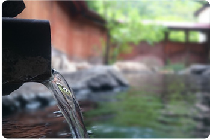
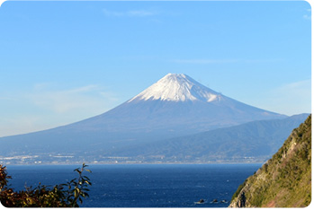
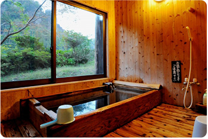
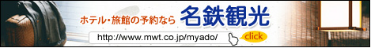

温泉・お風呂で選ぶ
源泉掛け流しの湯
循環・濾過を一切せずにかけ流す「源泉かけ流しの湯」に浸かり、贅沢な気分を味わいましょう。
絶景の露天風呂
海・山の絶景が目の前に広がる露天風呂で身も心もリフレッシュしましょう。
無料の貸切風呂
誰にも気兼ねなく、ゆっくりと温泉に浸かりたい方は、貸切風呂のある温泉宿がオススメです。
循環・濾過を一切せずにかけ流す「源泉かけ流しの湯」に浸かり、贅沢な気分を味わいましょう。
海・山の絶景が目の前に広がる露天風呂で身も心もリフレッシュしましょう。
誰にも気兼ねなく、ゆっくりと温泉に浸かりたい方は、貸切風呂のある温泉宿がオススメです。
和牛・伊勢海老・蟹など、人気の高級食材を使用した料理が味わえる格安の宿泊プランは早い者勝ち！
とにかく好きなものを好きなだけ食べたい方はバイキングや食べ放題プランがオススメです。
海辺の温泉宿では、地元で獲れる新鮮な魚介類を使用した海鮮料理を味わえます。
自由気ままな一人旅で訪れたい方も大歓迎の宿では、お得で安心な宿泊プランが用意されています。
自分たちのペースで、または家族だけの空間で食事を楽しみたい方には部屋食のお宿がおすすめです。
愛犬と同じ部屋に宿泊できたり、ペットも入浴できる温泉宿も年々増えてきています。
日本全国の温泉の宿・旅館の宿泊予約サイトです。
有名温泉から穴場の温泉まで、全国の温泉地を中心とした宿・旅館を2000件以上紹介しています。
絶景露天風呂・かけ流しなどの温泉情報、一万円以下で泊まれる格安・お得な宿の情報も充実しています。
日本全国のホテル・旅館を簡単にオンラインで検索・予約できる専門サイトです。豊富な情報の中から、温泉地の宿、観光地のホテル・旅館のお得な宿泊プランを選べます。
